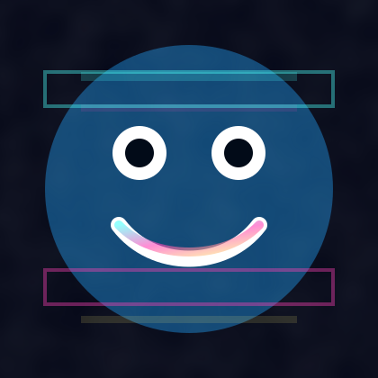

circo-digital-os: escritorio tty7
00:00:00
Circo Digital OS
/home/operador/archivos
/home/operador/archivos
NombreTipoTamano
Terminal - operador@circo-linux:~
operador@circo-linux:~$
Monitor de abstraccion
Estabilidad mental
72%
Probabilidad de salida
0.04%
Presion glitch
18%
Diversion obligatoria
91%
Directorio del circo
Buscador de salida
Sistema listo.
Simulador de actos
Seleccione un acto.
Laboratorio de recuerdos
Fragmentos bloqueados.
Visor de imágenes

CAINE_CORE_DELETE
Eliminando al anfitrion del sistema
Esperando confirmacion...